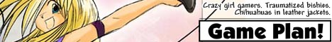

Showpony
Showpony is a powerful, easy-to-use, efficient multimedia engine for the web!
Showpony's already being used in production!
What's your medium?
Comics
Video
Text
Kinetic Novel
Audio
Using Showpony
Start by downloading the latest release and putting the files on your website:
HTML
<link rel="stylesheet" href="showpony/styles.css"> <script src="showpony/script.js"></script> <script src="https://heybard.com/apis/accounts/script.js"></script>
Custom Setup
You can pass a ton of options to the Showpony object to customize it to your liking:
JavaScript
new Showpony({ window:document.getElementById("showpony") ,path:"examples/orbit/" ,scrubLoad:true ,start:0 ,info:"[Current File PAD2]/[Total Files PAD2]<br>[Title]" ,title:"Orbit [Current File PAD2]: [Title]" ,credits:"<a target='_blank' href='https://twitter.com/joshpowlison'>Twitter.logo</a><a target='_blank' href='https://www.linkedin.com/in/joshuapowlison/n'>LinkedIn.logo</a><a target='_blank' href='http://www.webtoons.com/en/challenge/orbit/list?title_no=58078'>Webtoon.logo</a><br>Orbit by Josh Powlison, © 2018<br>Rights reserved except where otherwise stated" ,query:"orbit" ,HeyBardID:"orbit-test" ,dateFormat:{year:"numeric",month:"long",day:"numeric",hour:"numeric"} });
window is the div or element Showpony will display in.
path is the path to the story's files.
scrubLoad lets you load files as you scrub in the menu instead as opposed to only after you release your cursor or finger.
start determines where users start from- the beginning, the end, or anywhere in-between!
info sets the display of info in the menu and is very customizable!
title sets the display of info in the webpage's title. Notice how it changes when you move through the comic!
credits puts text in the bottom-right of the Showpony window when you click the header. You can also write "brandname.logo" to fetch any of the icons available on simpleicons.org!
query sets whether to save the user's position in the URL.
HeyBardID allows you to save user's bookmarks. Set a custom id here.
dateFormat sets the format of dates in info. This object is passed directly to an Intl.DateTimeFormat object's options. Look under "Syntax", "Parameters", "options" at the link for more info.
This Showpony knows a few tricks!
Showpony fires events, has a built-in admin panel, and more! Learn more at the Wiki!
Works copyright of their respective creators as stated. Showpony branding copyright of Josh Powlison. "Grand Hotel" font is Copyright (c) 2012 by Brian J. Bonislawsky and Jim Lyles DBA Astigmatic (AOETI) (astigma@astigmatic.com), with Reserved Font Name "Grand Hotel"